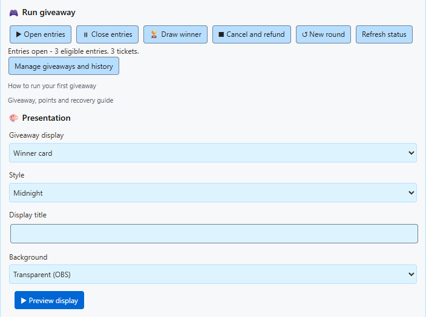

1. Najděte nástroj soutěží
Pokud již vidíte Nástroj soutěží (Giveaway Tool), Nastavení přihlášení, a Spustit soutěž, jste na správném místě. Žádné další vyskakovací okno soutěže hledat nemusíte.
Jinak otevřete hlavní nabídku nastavení SSN. U rozšíření prohlížeče klikněte na ikonu rozšíření/dílku skládačky v prohlížeči a poté na Social Stream Ninja. V desktopové aplikaci použijte nabídku nastavení SSN obsahující odkazy na překryvy. Vyhledejte giveaway a rozbalte Možnosti soutěže. Pokud vidíte uvítací obrazovku pro začátečníky, vyberte Přepnout do plného režimu.
- Diváci se přihlašujíVe vašem běžném zachytávaném chatu
- Vy řídíte losováníV nabídce nastavení SSN
- OBS zobrazí výsledekPomocí zkopírovaného odkazu zobrazení
Odkaz začínající https://socialstream.ninja/giveaway.html?session=... otevře zobrazení pro diváky. Při &managed v daném odkazu ovládáte soutěž z SSN; zobrazení nemá tlačítka přihlášení ani losování.
2. Spusťte jednoduchou bezplatnou soutěž
Před zahájením nechte SSN zapnuté a zdroje chatu připojené. Ověřte, že se běžné zprávy diváků zobrazují v doku chatu SSN.
- Ponechte základní nastavení. Ponechte ID soutěže (Giveaway ID) jako
default(prázdná hodnota také znamená default), Klíčové slovo přihlášení jako!enter, a Porovnávání zpráv jako Přesná zpráva (Exact message). Ponechte Přihlásit se mohou pouze členové a Povolit opakované výhry vypnuté. - Zkontrolujte Lístky a bodové ceny. Pro běžné bezplatné losování použijte Typ kola: Soutěž, Body za lístek: 0, Bodová cena pro každého vítěze: 0, a Počet cen: 1. Nepotřebujete k tomu systém věrnostních bodů.
- Klikněte na Otevřít přihlašování. Řekněte divákům: „Napište
!enterdo chatu a připojte se do soutěže.“ Přihlašují se v chatu, který zachytáváte, například YouTube nebo Twitch. Nepotřebují odkaz na soutěž. - Zkontrolujte přihlášky. Klikněte na Obnovit stav pro aktualizaci počtu v nabídce nebo Spravovat soutěže a historii pro kontrolu jmen. Opakování
!enternedává stejnému divákovi další bezplatné přihlášky. - Klikněte na Uzavřít přihlašování a potom Vylosovat vítěze. SSN náhodně vybere způsobilou přihlášku. Nabídka oznámí vítěze a připojená zobrazení ukážou stejný výsledek. Losování také automaticky uzavře přihlašování.
- Pro další soutěž klikněte na Nové kolo a poté Otevřít přihlašování. Nové kolo začíná s prázdným seznamem přihlášek; diváci se musí přihlásit znovu. Předchozí výsledky zůstávají v historii.

!enter po otevření přihlašování a poté klikněte na Obnovit stav. Počet ve vyskakovacím okně se při příchodu chatu neaktualizuje automaticky.Stav může ukazovat také počet lístků. Každá bezplatná přihláška se počítá jako jeden lístek; při ceně lístku nula se žádné body neúčtují.
SSN vybírá vítěze. Pokud je vaší cenou dárek, herní klíč nebo jiný předmět, doručení zařizujete sami. Bodová cena konkrétně uděluje věrnostní body SSN.
3. Zobrazte soutěž v OBS
- V části Vzhled, vyberte Zobrazení soutěže: Karta vítěze (Winner card) zobrazí výsledek přímo; Pás jmen (Name reel) střídá jména před odhalením; Komunitní kolo (Community wheel) odhalí výsledek pomocí točícího se kola.
- Vyberte Styl, volitelně Název zobrazení, a Průhledné (OBS) pro pozadí. Tematický panel (Themed panel) přidá panel na pozadí.
- Klikněte na Náhled zobrazení pro kontrolu vzhledu. Používá ukázková jména; neotevírá přihlašování, nepřidává skutečné diváky ani nespouští skutečné losování.
- Klikněte na [kopírovat odkaz] vedle Nástroj soutěží (Giveaway Tool). V OBS přidejte Zdroj prohlížeče (Browser Source) a vložte tento odkaz do pole URL. Začněte se šířkou 1280 a výškou 720.
- Nechte SSN spuštěné a používejte jeho Otevřít přihlašování, Uzavřít přihlašování, a Vylosovat vítěze tlačítka. Pro toto spravované zobrazení není potřeba krok „Interagovat“ v OBS.



Po změně nastavení vzhledu odkaz znovu zkopírujte a nahraďte URL v OBS. Použijte běžný zkopírovaný odkaz, nikoli URL náhledu. Zachovejte relaci a případné heslo z vlastní nabídky SSN, aby se zobrazení připojilo k vaší soutěži.
[upravit odkaz] načte stávající URL překryvu do nastavení odkazu v nabídce. Pro první soutěž jej nepotřebujete. [?] otevře stručnou nápovědu.
Co znamenají nastavení přihlášení
| Nastavení | Význam |
|---|---|
| ID soutěže (Giveaway ID) | Pojmenovává ovládanou soutěž. Použijte default pro jednu soutěž. Je oddělené od ID relace. Více soutěží potřebuje různá ID a odpovídající odkazy zobrazení. |
| Klíčové slovo přihlášení | Co diváci píší, například !enter nebo !raffle. Řekněte divákům klíčové slovo, které jste skutečně nastavili. |
| Přesná zpráva (Exact message) | Celá zpráva musí být !enter, bez ohledu na velikost písmen a mezery na začátku a konci. !enter please neodpovídá. |
| Klíčové slovo kdekoli (samostatné slovo) | Umožňuje zprávu, například I'd like to join !enter please. Klíčové slovo musí být oddělené mezerami; !enter! není stejné klíčové slovo. |
| Přihlásit se mohou pouze členové | Vyžaduje informace o členství v zachycené zprávě. Pro otevřenou soutěž ponechte vypnuté; neznamená to „kdokoli, kdo se dívá“ ani „jakýkoli sledující“. Podpora závisí na zdroji chatu. |
| Povolit opakované výhry | Umožňuje stejnému divákovi vyhrát více než jednu cenu v aktuálním kole. Při vypnutí se vítěz z okruhu způsobilých účastníků daného kola odstraní. Nové kolo dovolí předchozím vítězům znovu se přihlásit. |
| Lístky a bodové ceny | Volitelné nastavení věrnostních bodů SSN a další typy her. Pro bezplatnou soutěž ponechte náklady a bodové ceny na nule. Jsou oddělené od bodů kanálu Twitch. |
| Počet cen | Kolik výsledků kolo umožňuje. Nastavte před otevřením přihlašování. Pro více vítězů soutěže klikněte na Vylosovat vítěze jednou pro každou cenu; mezi těmito losováními nevytvářejte nové kolo. |
Nastavte pravidla přihlášení před vstupem účastníků. Jakmile existují přihlášky, změny polí nabídky nemění pravidla aktivního kola. Chcete-li je změnit, zrušte kolo, vytvořte nové, nastavte je a znovu otevřete přihlašování. Správce ukazuje pravidla skutečně uložená pro dané kolo.
Bezplatné přihlášky se sledují podle identity dodané každým zdrojem chatu. Stejný člověk přihlášený ze dvou platforem není automaticky rozpoznán jako jedna osoba.
Co dělají tlačítka
| Tlačítko | Použijte pro |
|---|---|
| Otevřít přihlašování | Přijímejte přihlášky nebo znovu otevřete pozastavené kolo před vylosováním jakéhokoli vítěze. Opětovné otevření zachová stávající přihlášky a musí použít stejná uzamčená pravidla. |
| Uzavřít přihlašování | Zastavte nové přihlášky a zachovejte stávající skupinu účastníků. |
| Vylosovat vítěze | Uzavřete přihlašování a vyberte jednoho vítěze. Musí být přihlášen alespoň jeden způsobilý účastník. Při nastavení jedné ceny je tím kolo dokončeno. |
| Zrušit a vrátit body | Zrušte kolo před losováním. Všechny rezervované body za lístky se vrátí. Již vylosovaný výsledek nelze vrátit zpět. |
| Nové kolo | Začněte znovu s prázdnou skupinou účastníků a zachovejte předchozí historii. Přihlašování začíná uzavřené. Placená kola s rezervovanými body je nejprve nutné zrušit a body vrátit. |
| Obnovit stav | Načtěte aktuální počet a poslední výsledek beze změny soutěže. |
| Spravovat soutěže a historii | Prohlížejte účastníky a uložená pravidla, před losováním odstraňte přihlášku, kontrolujte výsledky nebo exportujte historii/zálohy. |
Pokud něco nefunguje
- Stále žádné přihlášky? Klikněte na Obnovit stav. Ověřte, že se zpráva diváka objeví v SSN, přihlašování bylo při jejím přijetí otevřené, klíčové slovo odpovídá a omezení pouze na členy je vypnuté. U bezplatného losování podle klíčového slova musí být cena lístku nula. Souběžným bezplatným soutěžím nastavte různá klíčová slova.
- Testovací zprávy se nepřihlašují? Zprávy botů, soukromé, historické, opakovaně přehrané a označené jako test ekonomiky jsou vyloučeny. Použijte Náhled zobrazení pro vizuální kontrolu; chcete-li nacvičit skutečné zachytávání přihlášek, po otevření přihlašování odešlete klíčové slovo přes připojený chat.
- Zobrazení pouze říká „Čekání na soutěž“? Nechte hostitele SSN spuštěného, použijte zkopírovaný odkaz ze stejné relace a klikněte na Obnovit stav. Ověřte, že nabídka a zobrazení používají stejné ID soutěže. URL náhledu zobrazuje pouze ukázková data.
- Na stránce soutěže nejsou tlačítka? U spravovaného zobrazení pro diváky je to očekávané. Vraťte se do Možnosti soutěže v SSN.
- Kolo je dokončeno nebo jsou pravidla uzamčená? Použijte Nové kolo po dokončeném losování. Pro zrušení kola před losováním použijte Zrušit a vrátit body nejprve a potom Nové kolo.
- Restartovali jste SSN? Uložená kola zůstávají v místním profilu prohlížeče/aplikace; otevřená kola se uzavřou pro kontrolu. Použijte stejnou relaci, obnovte stav a před opětovným otevřením vše zkontrolujte. Změna relace vybírá samostatnou sadu soutěží.
Chcete placené lístky, bodové ceny, více soutěží, Stream Deck nebo Event Flow? Pokračujte na Soutěže, lístky a bodové ceny.